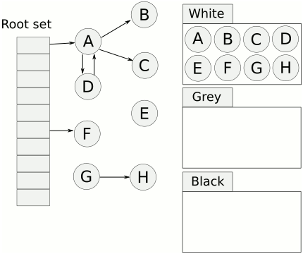

Go GC 算法
Go GC算法基本特征：
Go采用三色标记和写屏障：
- 起初所有的对象都是白色；
- 扫描找出所有可达对象，标记为灰色，放入待处理队列；
- 从队列提取灰色对象，将其引用对象标记为灰色放入队列,自身标记为黑色;
- 写屏障监视对象的内存修改，重新标色或放回队列；

关于上图有几点需要说明的是。
- 首先从 root 开始遍历，root 包括全局指针和 goroutine 栈上的指针。
- mark 有两个过程。
- 从 root 开始遍历，标记为灰色。遍历灰色队列。
- re-scan 全局指针和栈。因为 mark 和用户程序是并行的，所以在过程 1 的时候可能会有新的对象分配，这个时候就需要通过写屏障（write barrier）记录下来。re-scan 再完成检查一下。
- Stop The World 有两个过程。
- 第一个是 GC 将要开始的时候，这个时候主要是一些准备工作，比如 enable write barrier。
- 第二个过程就是上面提到的 re-scan 过程。如果这个时候没有 stw，那么 mark 将无休止。
Go各版本GC算法及STW耗时 ：
Go 1.0
GC算法:
- same as Go 1.1, but instead of being mostly precise the garbage collector is conservative. The conservative GC is able to ignore objects such as []byte. ：同1.1版本，但不是大多数精确回收，而是采用保守的方式，会忽略一些对象(如[]byte对象)
Go 1.1
GC算法:
- mark-and-sweep (parallel implementation) ：标记回收算法(并行实现)
- non-generational ：非分代回收
- non-compacting ：非压缩的
- mostly precise (except stack frames) ：大多数精确地回收(除了堆栈段)
- stop-the-world ：STW
- bitmap-based representation ：基于bitmap标示
- zero-cost when the program is not allocating memory (that is: shuffling pointers around is as fast as in C, although in practice this runs somewhat slower than C because the Go compiler is not as advanced as C compilers such as GCC) ：如果程序没有在分配内存则是零消耗（也就是说移动指针和C语言一样快，但实际运行程序的时候比C会慢一点，主要因为go编译器没有类似GCC的c编译器那么先进）
- supports finalizers on objects ：支持对象析构器
- there is no support for weak references ：不支持弱引用
Go 1.3
GC算法:
- Mark (STW) ：Mark阶段STW
- concurrent sweep: 并发回收
- fully precise：完全精确回收
- updates on top of Go 1.1：基于1.1版本升级
Go 1.4
GC STW耗时: 300ms
GC算法:
- hybrid stop-the-world/concurrent collector：混合STW/并发收集器
- stop-the-world part limited by a 10ms deadline：STW阶段有10ms限制截止时间
- CPU cores dedicated to running the concurrent collector
- tri-color mark-and-sweep algorithm（三色标记法）
- non-generational ：非分代回收
- non-compacting ：非压缩的
- fully precise ：完全精确的
- incurs a small cost if the program is moving pointers around ：程序如果正在移动指针会有额外一点消耗
- lower latency, but most likely also lower throughput, than Go 1.3 GC ：比1.3更少延迟，一般也会更少吞吐量
Go 1.5
GC STW耗时: 40ms
GC算法:
Go 1.6
GC STW耗时: 3ms
GC算法:
Go 1.7
GC STW耗时: 1.5 ms
GC算法:
- 三色标记法混合write barrier
- write barrier 使用的经典的 Dijkstra-style insertion write barrier [Dijkstra ‘78]， STW 的主要耗时就在 stack re-scan 的过程;
Go 1.8
GC STW耗时: 50µs
GC算法:
- 三色标记法混合write barrier
- 采用一种混合的 write barrier 方式 （Yuasa-style deletion write barrier [Yuasa ‘90] 和 Dijkstra-style insertion write barrier [Dijkstra ‘78]）来避免 re-scan。参考 17503-eliminate-rescan。
- stack re-scanning concurrent, 参考17505-concurrent-rescan
Go 1.9、1.10
基于以前版本没有太大变化。
参考:
History
- 2018-08-01, wongoo, created